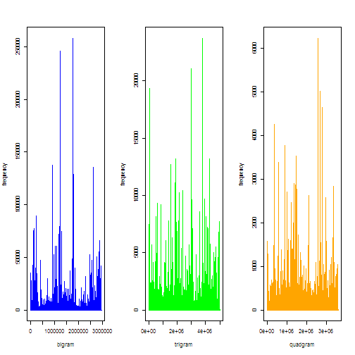
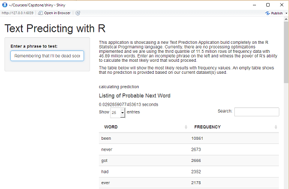

Text Prediction With R
Capstone Project
Gilbert Maerina
Algorithm
We'll be using probabilistic models built on sequences of text of lengths -N- (n-grams).
Using conglomerate of data to capture varying representations of text combinations
- Data from US News, US Blogs, and Twitter
- 102 million words
- 4.27 million lines
Resulting 3 tables of 2-gram (bigram), 3-gram (trigram), and 4-gram (quadgram)
- 65823672 bigrams detected
- 62508808 trigrams detected
- 59294385 quadgrams detected
Algorithm (cont...)

- High frequency valued n-grams can be found in third quantile.
- System used the third quantile of data to build the lookup tables
- Shorter lookup tables, faster performance
Implementation
User interface incorporated into shiny
Takes a brief moment to load libraries
As User types, predictions are calculated and displayed in a table sorted by frequency
Table of values can be searched or sorted to User's liking

Performance
Assume someone enters text on a mobile device at 40 WPM
Application takes average of 0.05 seconds (5 milliseconds) to return a list of words
- List of ngram values done before deployment, lessens computation time
- Further refinement is possible by decreasing the quantity of values returned
Application can be modified to benefit other purposes where ngrams can be applied
THANK YOU